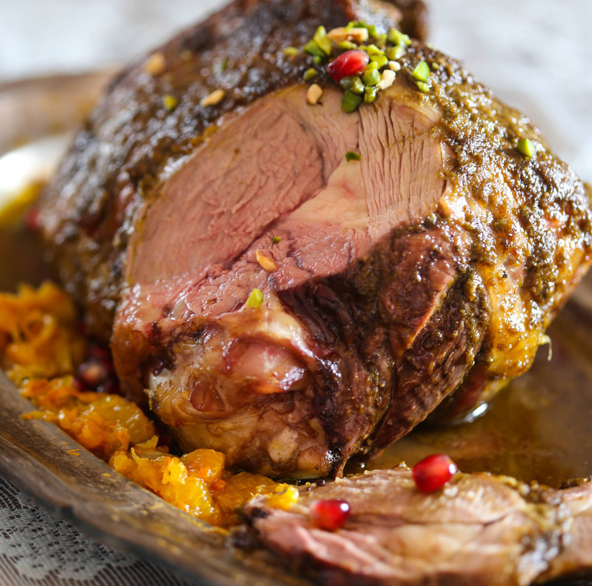

Эти две части туши идеально подходят для запекания. В них достаточно много мяса, и это мясо не требует длительного приготовления с добавлением жидкости, что позволяет нам получить нежное внутри мясо с ароматной корочкой. Если у вас гости, выбирайте ногу — она больше, поэтому ее хватит на 6–8 человек. Соотношение мяса к кости в лопатке такое же как в ноге, но просто лопатка меньше, и ее хватит на 2–4 человека.
Для меня идеальное запеченное мясо — это нежное внутри мясо с аппетитной, ароматной корочкой. Чем выше температура, тем сильнее зарумянивается мясо. Мой подход — начинать запекать при высокой температуре (200–230 градусов) до достижения румяной корочки (примерно 15 минут), затем резко снижать температуру (чем ниже, тем сочнее и нежнее будет мясо — от 100 до 180 градусов), и доводить мясо до нужной вам готовности. Но в данном рецепте технология немного иная из-за того, что мясо запекается в маринаде.
После запекания мясо должно «отдохнуть». Во время отдыха волокна расслабляются, а соки распределяются.
На фото ноги видна довольно большая часть жира на мясе. Я не советую вам этот жир срезать — в нем весь вкус и секрет сочности мяса. Лишний жир вытопится, а корочка с жиром — это очень вкусно. Не хотите есть, не ешьте — оставьте его на тарелке, но при запекании он убережет мясо от высыхания.
Первый вопрос, которым вам следует задаться — а нужно ли мариновать? Знаете ли вы, зачем маринуют мясо? Маринад ни в коем случае не призван замаскировать неприятный вкус. Также не стоит верить в то, что маринад способен смягчить жесткое мясо. Несмотря на то, что продукты с повышенной кислотностью (вино, уксус, лимонный сок) могут размягчать мышечные волокна, требуется много времени, чтобы это произошло. Но результат вам вряд ли понравится: мясо станет рыхлым и мучнистым. Это не та мягкость, к которой мы стремимся. Для чего же нужны маринады? Маринады помогают дать мясу дополнительный вкус. Вот и все.
Гораздо более эффективным способом смягчить мясо и сделать его более сочным является засол. Засол бывает сухим и в соленом водяном растворе. Для мокрого засола в воде мясо погружается в раствор, содержащий от 3% до 7% соли, на несколько часов или даже дней, в зависимости от размера. В результате мясо становится более нежным и сочным. Кроме соли в раствор могут быть добавлены и другие ингредиенты, например, сахар, травы, специи. Соль как бы разрывает мышечные волокна, тем самым, смягчая мясо. Таким образом, специи в засоле лучше впитываются в мясо. Кроме того, соль приводит к тому, что клетки мяса могут впитать больше жидкости и, соответственно, потерять меньше сока при приготовлении.
Я предпочитаю сухой засол. Этот способ более простой и удобный: не требует возни с водой и места в холодильнике. Эффект достигается тот же. За 12–48 часов до запекания нужно как следует посолить мясо и отправить его в холодильник. На ногу весом 2–2.5 кг возьмите ½ ст.л. мелкой морской соли и как следует, со всех сторон, посыпьте ногу.
Чтобы узнать готовность мяса вовремя и не пересушить его. А как же таблицы с рассчитанным временем приготовления на вес? Если бы кто-то задался целью написать такую таблицу, учитывая все факторы, получилась бы целая энциклопедия. Время приготовления зависит от особенности вашей духовки, от того, сколько раз вы открыли дверцу, от изначальной температуры мяса, от формы мяса, наличия костей и других факторов. Поэтому гораздо проще не учитывать все эти нюансы, а вставить в мясо градусник. Куда вставлять? В мясистую часть, подальше от кости — кости нагреваются быстрее. Какой градусник лучше? Электронный, мгновенный. Круглый градусник со стрелкой и нарисованными коровками никуда не годится — у него слишком большая погрешность. Если у вас есть градусник, вам нужно увидеть значение 60 градусов. Проверять можно уже через 40 минут после начала приготовления ноги. Ноге весом 2–2.5 кг достаточно не более часа для идеальной готовности. Лопатке достаточно 10 минут при 230 градусах и максимум 30 при 180. Готовить баранину дольше — большая ошибка. Мясо при отдыхе добирает 5–7 градусов, не доводите выше 70 градусов внутри.
Вам нужен толстостенный тяжелый противень, соразмерный мясу. Почему не подходит маленький противень для большой ноги — очевидно. Большой противень для маленькой лопатки не подходит потому, что соки, распределившись тонким слоем, начнут гореть. В идеале вам нужен чугунный противень, но это может быть и керамическая или глиняная форма, или хорошая толстая нержавейка. Почему это важно? Потому что нам нужна хорошая теплопроводность и равномерность нагрева.